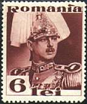
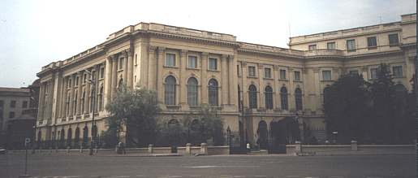
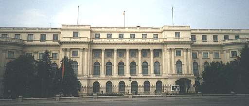
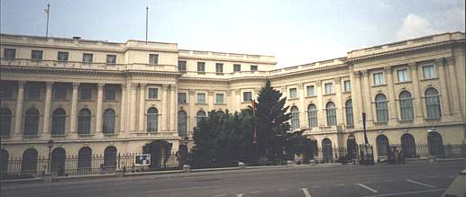
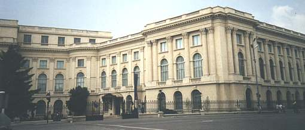

 |
The National Museum of Art of Romania The Royal Palace |
|

This is the short story of the most beautiful palace from the capital of Romania, Bucharest. It was destroyed by fire, later bombed and then shot during its not so long history; but it revived each time, even more beautiful and magnificent. It is the wife of Alexandu Ioan Cuza, the first ruler of the united Romanian Principalities (who reigned between 1859 - 1866), who has refurbished the earlier so-called Golescu house, located in the center of Bucharest. The house was then remodeled and later enlarged by the King Carol I (1866 - 1914). The job was carried out by French architect Paul Gottereau between 1882 - 1885. Toward 1906 the then extensive palace with layout similar to that of today had become the winter residence of the Royal Court.

Shortly before the death of King Ferdinand (1922 - 1927) a fire nearly destroyed Gottereau's palace; only the grand marble staircase survived. King Ferdinand's wife, Queen Marie (1914 - 1938, shown in the top of the page, on the right), the granddaughter of the English Queen Victoria, undertook to rebuild the palace. At his ascension to throne King Carol II (1930 - 1940) reconstructed the whole palace. The architect N.N. Nenciulescu supervised the plans, closely following King's instructions. The new south wing (known as the Kretzulescu wing, due to the proximity of a church bearing the name), shown above, comprised several spaces for a museum.

Though severely damaged during
WW II (in August 1944 eighty heavy bombs were dropped on the
building), the palace still retains the shape and the classicist
style of King Carol II's reconstruction. In 1948, when the decision
was taken to open a public museum in the palace, the official
reception rooms in the central wing (shown above) were bestowed to
the Council of Ministers, later known an State Council. In 1961 the
museum was relocated into the north wing (shown below) which was
completely rebuilt.
The museum was more than witness to the events in
December 1989 that put an end to Ceausescu's dictatorship and in the
same time to the communist regime in Romania. The palace was caught
in crossfire and both the building and the collections suffered
great losses.
In February 1990 the entire palace building was officially
designated for the museum.

The collections amassed by the National Museum of Art of Romania come from a variety of sources. They also reveal the dynamics of local museums in the first decades of the 20th century. The local collectors were driven by a strong interest in the national art, also because few of them had the financial resources to "compete" with King Carol I, who acquired entire lots of old master paintings. Therefore the efforts, followed by donations of collectors like Anastase Simu, Toma Stelian, Professors Ioan Cantacusino and George Oprescu essentially contributed to the enrichment of museum's collections.

After the WW II the National
Gallery was opened to the public on 20 May 1950. It exhibited
exclusively paintings and sculptures by Romanian artists. The event
was highly politicized, the entrance being guarded by a
larger-then-life-size statue of Stalin. The ground floor housed the
first known work of Romanian art, beginning with the frescoes and
the icons from the 16th, 17th and 18th centuries. 19th century
paintings were equally well represented, and over 100 works by
Nicolae Grigorescu were displayed on the first floor.
One year later the Foreign Art Gallery was opened
to the public. The museum's holdings gradually grew through the
depriving of other Bucharest art museums and of private collectors.
During the decades that followed, the museum's acquisition policy on
the foreign markets was undermined by scarcity of funds.
In time, the structure of the National Museum of
Art of Romania was augmented by the creation of several new
departments: Decorative art (1978), Oriental art (1990) and
Contemporary art (1994). (Text after "The National Museum of
Art of Romania, Guide of the Collections", by Codruta Cruceanu).
All photographs were taken in May 2001 by the author of this site.
The museum is located in the center of Bucharest, on Calea Victoriei 49 - 53. The opening time is between 10 - 18 hours. The museum is closed on Monday and Tuesday. For a quite small amount of money one can take pictures in the whole museum, even by using flashes (what the author hasn't done).
Links:
| Published:
06/09/2001. Revised: 06/11/01. Copyright © 2001 by Victor Manta, Switzerland. All rights reserved worldwide. |
|